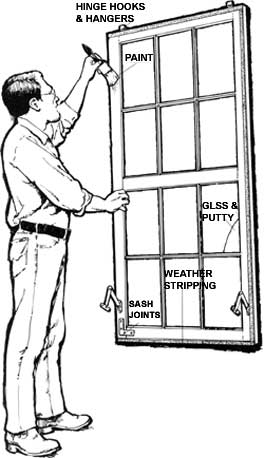

Storm Window Once Over
Guide to triple track and wood sashes storm window designs, including fasteners and hardware, frames, caulking, joints, glass, paint, weather stripping, hinge hooks and hangers.
By Clarence Goosen
September/October 1988
Both types of storm windows will do a better job of keeping cold air out (and warm air in) if you give them a fall checkup.
TRIPLE-TRACK
These modern aluminum frames fasten outside the window casing, have double-hung glass panels and a movable screen.
Fasteners and hardware: Inspect the window inside and out. Loose screws should be tightened, and bent tracks straightened. Broken latches and springs can be replaced if the panel frames are disassembled; they're usually held together by corner clips or screws.
Frames: Aluminum storm frames must be parallel and square. If they're hung incorrectly, the panels will allow infiltration, won't operate smoothly and may even slip from their tracks, creating a potential hazard. To align a frame, hold it in place with one screw on each side. Use a square to check the corners, and a tape measure to determine that the sides are parallel. Remove and relocate screws if necessary to straighten the frame, but don't overtighten them or you'll warp it.
Caulking: The flanges on the outer edge of the frame are sealed to the window casing with caulking compound. To recaulk, remove the frame and apply a bead of sealant all around the flange, except for the weep hole reliefs at the bottom. Reinstall the frame using at least eight wood screws. The panel frames have their own weather stripping along the top rail.
Joints: The frame joints can come loose with time. If retightening doesn't close the gaps, use aluminum repair compound.
Glass: Cracked panes can be replaced easily, since the panel frames are fitted with rubber or plastic seals that slip around the glass and hold it in place.
WOOD SASHES
The old standard model: These solid, wooden, window-equipped frames are hung from the window casings on kooks and are replaced by similarly framed screens with the coming of warmer weather.
Hinge hooks and hangers: Remove the sash from the window casing. Examine the hooks on the casing for bent tabs or missing screws, and replace any necessary hardware. Loose screws should be tightened--or should be replaced with longer screws if the old ones don't grip. Check the sash hangers in the same manner. If the mounting holes are worn, relocate the hinges and seal the old holes with wood filler. Ventilation supports, if present, should operate freely.
Glass and putty: Cracked panes and dried glazing compound should be replaced. If the glass is undamaged, be especially careful when removing the old compound and glazier's points. The whole pane can then be lifted out, and the frame cleaned, primed and bedded with putty.
If the glass needs replacing, make sure the new piece is the same size as the old one. Set the pane in place and, using a flat screwdriver, press new glazier's points into the frame. Then lay in fresh glazing compound, and bevel its surface by drawing across it with a putty knife.
Sash joints: Loose or open joints in the sash frame can be glued and reinforced if necessary. You may have to remove a glass pane to safely pry apart the joints. Refasten the wood with aliphatic resin (yellow glue), and install a metal brace if the joint is weak or damaged.
Paint: Cracked or peeling paint should be sanded or scraped to a sound surface, then primed and repainted with a product made for exterior use. Suspending the sash from its hangers outdoors makes it easy to paint both sides in one session.
Weather stripping: If the window casing has a raised ledge to back the sash, there should be a weather seal on the sash's inner edge. A damaged or missing seal should be replaced with self-adhesive foam weather stripping sized to match the contact surface. For casings with no backing ledge, it may be possible to tack a molded sponge-rubber flange gasket to the sash's four edges. Make certain the fasteners don't protrude beyond the raised rib of the gasket.
|
Illustrations By Clarence Goosen |
 |
 |